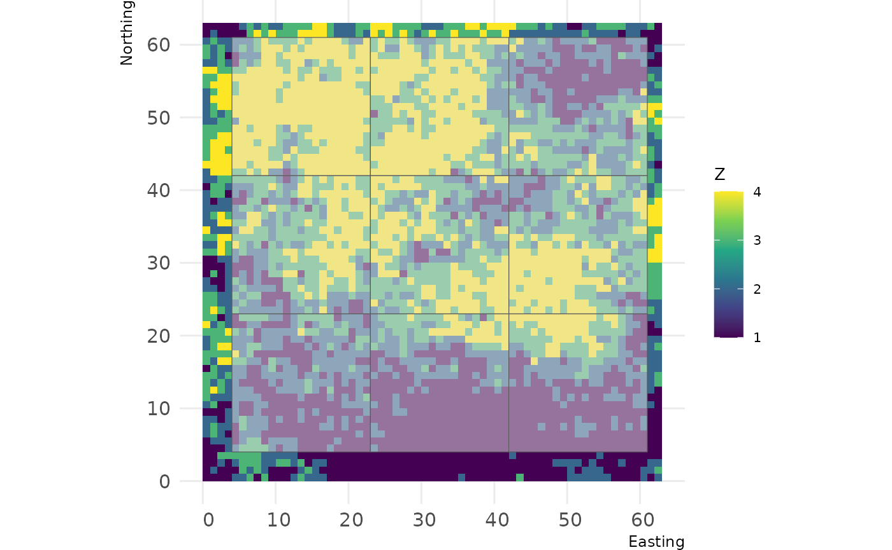
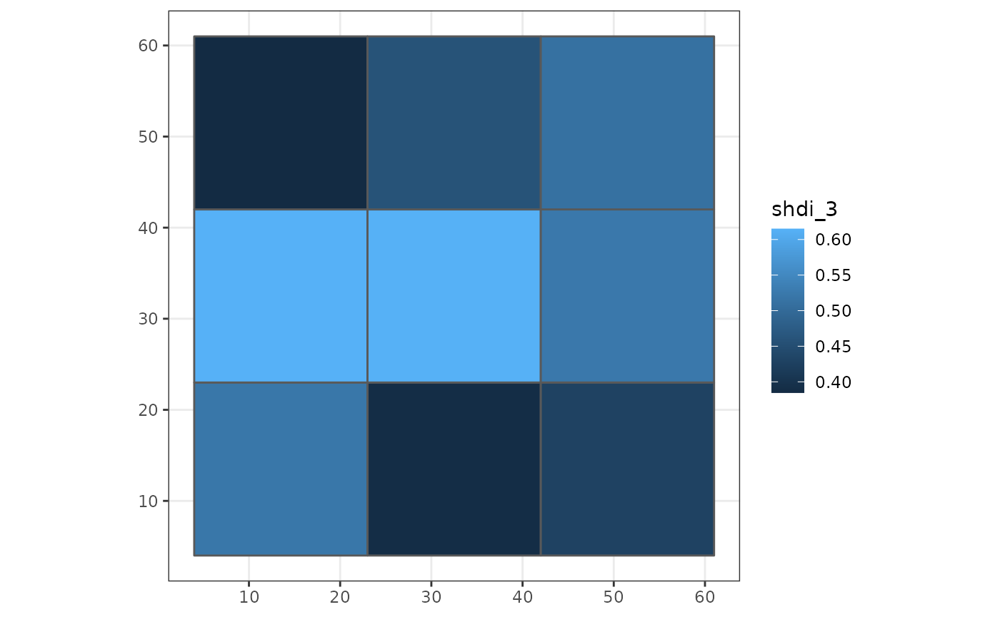
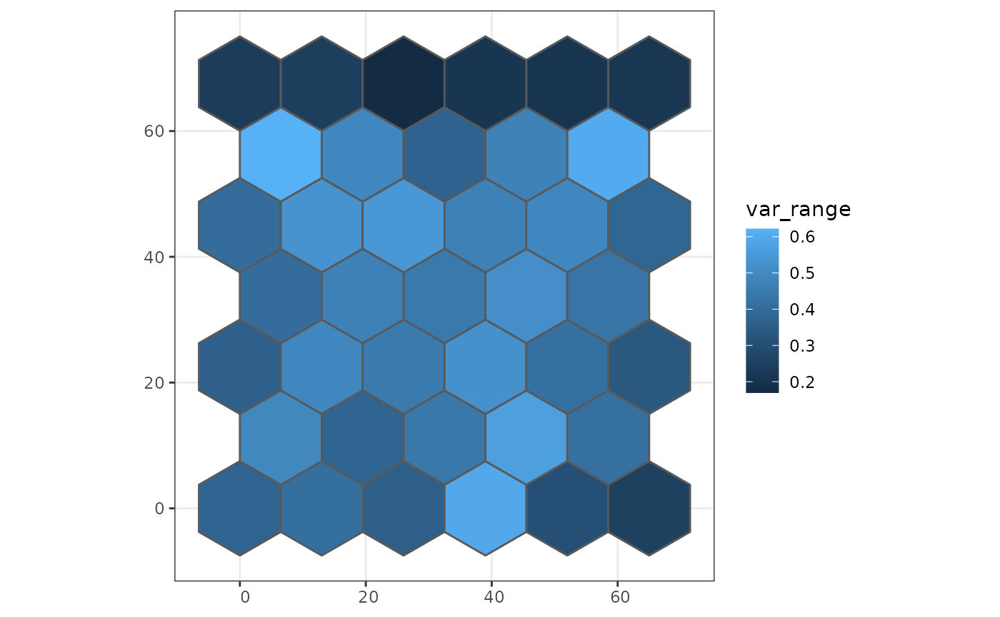
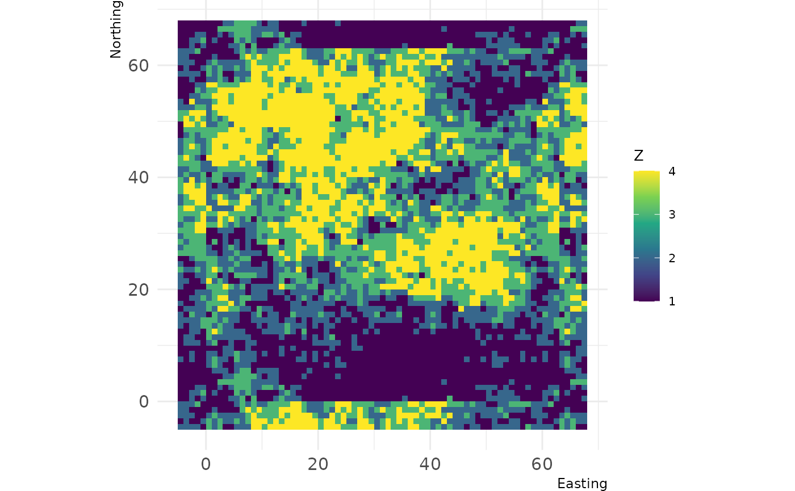

Package overview
The primary functions of the grainchanger package are those which facilitate moving-window (winmove_agg) and direct (nomove_agg) data aggregation. These functions aggregate fine-grain data (fine_dat) to a coarse-grain (coarse_dat) using a function specified by the user (agg_fun). The moving-window method takes in an additional function (win_fun) which smooths the fine-grain data prior to aggregation.
The moving-window smoothing function is also available in the package (winmove), as well as several built-in functions, and an additional utility function for use with simulated landscapes (create_torus).
The winmove function acts as a convenient wrapper to raster::focalWeight and raster::focal which takes advantage of optimised functions built into the grainchanger package.
Data aggregation & sf
The functions in grainchanger have been written to be compatible with the sf package. The online textbook Geocomputation with R provides an introduction to spatial data analysis with the sf package.
Moving-window data aggregation
In this example, we show how to create a coarse grain grid over the fine-grain data using st_make_grid from the sf package. We then aggregate the package data cat_ls to this grid using moving-window data aggregation and plot using ggplot2.
library(grainchanger)
library(sf)
library(ggplot2)
coarse_dat <- cat_ls %>%
# get the bounding box
st_bbox() %>%
# turn into an sfc object
st_as_sfc() %>%
# negative buffer
st_buffer(-4) %>%
# make a square grid
st_make_grid(cellsize = 19) %>%
# turn into sf object
st_sf()
# we can plot this grid on top of the fine data
landscapetools::show_landscape(cat_ls) +
geom_sf(data = coarse_dat, alpha = 0.5)
coarse_dat$shdi_3 <- winmove_agg(coarse_dat = coarse_dat,
fine_dat = cat_ls,
d = 3,
type = "rectangle",
win_fun = shdi,
agg_fun = mean,
is_grid = FALSE,
lc_class = 1:4)
ggplot(coarse_dat, aes(fill = shdi_3)) +
geom_sf() +
theme_bw()
Note that when creating the grid, we made it 4 units smaller (the size of the moving window) than the fine-resolution data. The reason for this is that we avoid edge effects created when the moving window goes beyond the extent of the data. A warning is thrown if fine_dat is the same size as (or smaller than) coarse_dat. The below is an example of this, using g_sf from the package.
g_sf$shei_4 <- winmove_agg(coarse_dat = g_sf,
fine_dat = cat_ls,
d = 4,
type = "rectangle",
win_fun = shei,
agg_fun = mean,
is_grid = FALSE,
lc_class = 1:4)
#> Warning: Moving window extends beyond extent of `fine_dat`
#> You will get edge effects for the following cells of `coarse_dat`:
#> 1,2,3,4,5,6,7,8,9
#> Warning in min(x@data@values, na.rm = TRUE): no non-missing arguments to min;
#> returning Inf
#> Warning in max(x@data@values, na.rm = TRUE): no non-missing arguments to max;
#> returning -InfDirect data aggregation
In this example we show how to read in a shapefile as an sf object, apply direct data aggregation, and plot using ggplot2. cont_ls is a fine-resolution RasterLayer provided with the package.
library(sf)
library(ggplot2)
# coarse_dat <- st_read("your_file.shp")
coarse_dat <- st_read(system.file("shape/poly_sf.shp", package="grainchanger"))
#> Reading layer `poly_sf' from data source `/cache/grainchanger/shape/poly_sf.shp' using driver `ESRI Shapefile'
#> Simple feature collection with 39 features and 1 field
#> Geometry type: POLYGON
#> Dimension: XY
#> Bounding box: xmin: -6.5 ymin: -7.505553 xmax: 71.5 ymax: 75.05553
#> CRS: NA
coarse_dat$var_range <- nomove_agg(coarse_dat = coarse_dat,
fine_dat = cont_ls,
agg_fun = var_range,
is_grid = FALSE)
ggplot(coarse_dat, aes(fill = var_range)) +
geom_sf() +
theme_bw()
Functions
There are a number of inbuilt functions in the grainchanger package, with their usage outlined below. While it is possible to use user-defined functions within both winmove_agg and nomove_agg, we welcome suggestions for additional functions. Please add as an issue - doing it this way means we can maximise the speed of the function.
| Function.Name | Description | Additional.arguments |
|---|---|---|
| prop | Calculate the proportion of a given class | lc_class (numeric) |
| shdi | Calculate the Shannon diversity | lc_class (numeric) |
| shei | Calculate the Shannon evenness | lc_class (numeric) |
| range | Calculate the range of values |
Additional utilities
Create torus
The create_torus function takes as input a square or rectangular landscape and pads it by a specified radius, creating the effect of a torus. We developed this function in order to avoid edge effects when testing methods on simulated landscapes (such as those from NLMR).
torus <- create_torus(cat_ls, 5)
landscapetools::show_landscape(torus)
Running aggregation in parallel
The winmove_agg and nomove_agg functions have been designed to work with the future package. This means that with just one additional line of code, the functions can be run in parallel while taking advantage of the resources available to the user.
library(future)
plan(multisession)See the future documentation for more information.